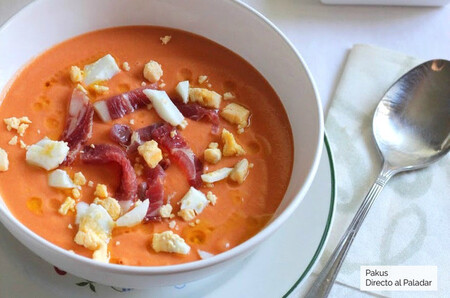

Andalusian Salmorejo

Salmorejo is a cold tomato soup that is famous in the south of Spain. It’s similar to gazpacho — but thicker and creamier.
Ingredients for 4 people:
- 2 1/2 cups (150 g) white bread
- 2 hard-boiled eggs
- 2 garlic cloves
- 2 1/2 pounds (1 kg) tomatoes
- 1/2 cup (68 g) chopped serrano ham
- 1 teaspoon sherry vinegar
- 1/4 cup (60 ml) extra virgin olive oil
- 1/2 cup (120 ml) water
- Salt and black pepper to taste
Steps:
- To start things off with this salmorejo recipe boil two eggs for 10 minutes. You can boil them for more or less time, it depends on how you like them. When they’re ready let them cool and chop them.
- After that, grab your tomatoes, remove the core and chop them. Also, peel and mince the garlic. You can skip this step and just putting them in the food processor, but they blend better if you do this.
- With the help of a blender or a food processor blend tomatoes, garlic, sherry vinegar, and water until getting pure like consistency (for about 1 minute.)
- Add stale bread into the blender, any bread with a dense crumb will do.
Then drizzle in 1/4 cup of olive oil until it incorporates. Season with salt and pepper and blend for one more minute. You can add other seasonings such as smoked paprika, turmeric, just to name a few.
- Transfer your cold tomato soup into a clean bowl and cover it with plastic wrap or a plastic bag. Refrigerate it for at least 30 minutes before eating it.
- For the final step serve your salmorejo in 4 bowls or plates and garnish with chopped eggs and serrano ham.